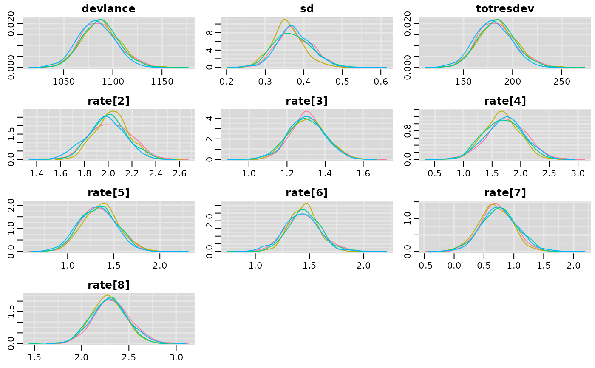
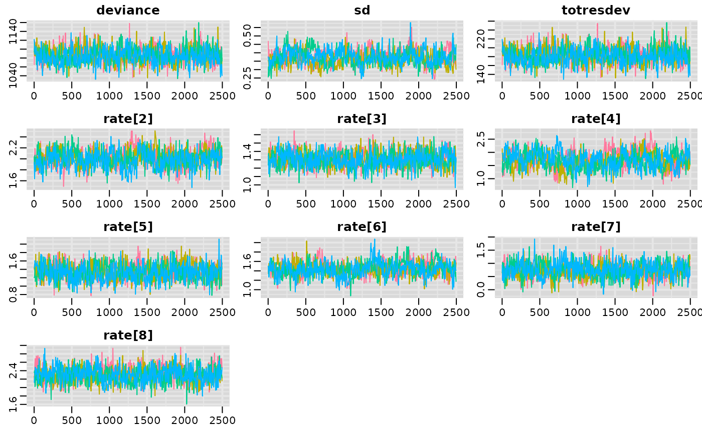

mbnma.run.RdFits a Bayesian dose-response for model-based network meta-analysis (MBNMA) that can account for multiple doses of different agents by applying a desired dose-response function. Follows the methods of Mawdsley et al. (2016) .
mbnma.run(
network,
fun = dpoly(degree = 1),
method = "common",
regress = NULL,
regress.effect = "common",
class.effect = list(),
UME = FALSE,
sdscale = FALSE,
cor = FALSE,
omega = NULL,
parameters.to.save = NULL,
pd = "pd.kl",
likelihood = NULL,
link = NULL,
priors = NULL,
n.iter = 20000,
n.chains = 3,
n.burnin = floor(n.iter/2),
n.thin = max(1, floor((n.iter - n.burnin)/1000)),
autojags = FALSE,
Rhat = 1.05,
n.update = 10,
model.file = NULL,
jagsdata = NULL,
...
)An object of class mbnma.network.
An object of class("dosefun") that specifies a functional form to be assigned to the
dose-response. See Details.
Can take either "common" or "random" to indicate whether relative effects
should be modelled with between-study heterogeneity or not (see details).
A formula of effect modifiers (variables that
interact with the treatment effect) to incorporate using Network Meta-Regression
(E.g. ~ Population + Age). All variables in the formula are modelled as interacting
with the treatment effect (i.e. prognostic variables cannot be included in this way).
Effects modifiers must be named variables in network$data.ab and must be identical
within a study. Factor and character effect modifiers will be converted to a series of
named dummy variables.
Indicates whether effect modification should be assumed to be
"common" (assumed to be equal versus Placebo throughout the network),
"random" (assumed to be exchangeable versus Placebo throughout the network),
"agent" (assumed to be equal versus Placebo within each agent), or
"class" (assumed to be equal versus Placebo within each class).
A list of named strings that determines which dose-response
parameters to model with a class effect and what that effect should be
("common" or "random"). Element names should match dose-response parameter names.
Note that assuming class effects on some dose-response parameters may be unreasonable if
the range of doses differ substantially across agents within a class.
A boolean object to indicate whether to fit an Unrelated Mean Effects model that does not assume consistency and so can be used to test if the consistency assumption is valid.
Logical object to indicate whether to write a model that specifies a reference SD
for standardising when modelling using Standardised Mean Differences. Specifying sdscale=TRUE
will therefore only modify the model if link function is set to SMD (link="smd").
A boolean object that indicates whether correlation should be modelled
between relative effect dose-response parameters. This is
automatically set to FALSE if class effects are modelled or if multiple dose-response
functions are fitted.
A scale matrix for the inverse-Wishart prior for the covariance matrix used
to model the correlation between dose-response parameters (see Details for dose-response functions). omega must
be a symmetric positive definite matrix with dimensions equal to the number of dose-response parameters modelled using
relative effects ("rel"). If left as NULL (the default) a diagonal matrix with elements equal to 100
is used.
A character vector containing names of parameters to monitor in JAGS
Can take either:
pv only pV will be reported (as automatically outputted by R2jags).
plugin calculates pD by the plug-in
method (Spiegelhalter et al. 2002)
. It is faster, but may output negative
non-sensical values, due to skewed deviances that can arise with non-linear models.
pd.kl calculates pD by the Kullback-Leibler divergence (Plummer 2008)
. This
will require running the model for additional iterations but is a more robust calculation for the effective
number of parameters in non-linear models.
popt calculates pD using an optimism adjustment which allows for calculation
of the penalized expected deviance (Plummer 2008)
.
A string indicating the likelihood to use in the model. Can take either "binomial",
"normal" or "poisson". If left as NULL the likelihood will be inferred from the data.
A string indicating the link function to use in the model. Can take any link function
defined within JAGS (e.g. "logit", "log", "probit", "cloglog"), be assigned the value "identity" for
an identity link function, or be assigned the value "smd" for modelling Standardised Mean Differences using an
identity link function. If left as NULL the link function will be automatically assigned based
on the likelihood.
A named list of parameter values (without indices) and replacement prior distribution values given as strings using distributions as specified in JAGS syntax (see Plummer (2017) ). Note that normal distributions in JAGS are specified as $$N(\mu, prec)$$, where $$prec = 1 / {\sigma^2}$$.
number of total iterations per chain (including burn in; default: 20000)
number of Markov chains (default: 3)
length of burn in, i.e. number of iterations to discard at the beginning. Default is `n.iter/2``, that is, discarding the first half of the simulations. If n.burnin is 0, jags() will run 100 iterations for adaption.
thinning rate. Must be a positive integer. Set n.thin > 1`` to save memory and computation time if n.iter is large. Default is max(1, floor(n.chains * (n.iter-n.burnin) / 1000))`` which will only thin if there are at least 2000
simulations.
A boolean value that indicates whether the model should be continually updated until
it has converged below a specific cutoff of Rhat
A cutoff value for the Gelman-Rubin convergence diagnostic(Gelman and Rubin 1992)
.
Unless all parameters have Rhat values lower than this the model will continue to sequentially update up
to a maximum of n.update. Default is 1.05.
The maximum number of updates. Each update is run for 1000 iterations, after which the
Rhat values of all parameters are checked against Rhat. Default maximum updates
is 10 (i.e. 10,000 additional iterations in total).
The file path to a JAGS model (.jags file) that can be used
to overwrite the JAGS model that is automatically written based on the
specified options in MBNMAdose. Useful for adding further model flexibility.
A named list of the data objects to be used in the JAGS model. Only
required if users are defining their own JAGS model using model.file. Format
should match that of standard models fitted in MBNMAdose
(see mbnma$model.arg$jagsdata)
Arguments to be sent to R2jags.
An object of S3 class(c("mbnma", "rjags")) containing parameter
results from the model. Can be summarized by print() and can check
traceplots using R2jags::traceplot() or various functions from the package mcmcplots.
Nodes that are automatically monitored (if present in the model) have the following interpretation:
| Parameters(s)/Parameter Prefix | Interpretation |
<named dose-response parameter> (e.g. emax) | The pooled effect for each dose-response parameter, as defined in dose-response functions. Will vary by agent if pooling is specified as "rel" in the dose-response function. |
sd | The between-study SD (heterogeneity) for relative effects, reported if method="random" |
sd.<named dose-response parameter> (e.g. sd.emax) | Between-study SD (heterogeneity) for absolute dose-response parameters specified as "random". |
<named capitalized dose-response parameter> (e.g. EMAX) | The class effect within each class for a given dose-response parameter. These will be estimated by the model if specified in class.effects for a given dose-response parameter. |
sd.<named capitalized dose-response parameter> (e.g. sd.EMAX) | The within-class SD for different agents within the same class. Will be estimated by the model if any dose-response parameter in class.effect is set to "random". |
totresdev | The residual deviance of the model |
deviance | The deviance of the model |
If there are errors in the JAGS model code then the object will be a list
consisting of two elements - an error message from JAGS that can help with
debugging and model.arg, a list of arguments provided to mbnma.run()
which includes jagscode, the JAGS code for the model that can help
users identify the source of the error.
When relative effects are modelled on more than one dose-response parameter and
cor = TRUE, correlation between the dose-response parameters is automatically
estimated using a vague Wishart prior. This prior can be made slightly more informative
by specifying the relative scale of variances between the dose-response parameters using
omega. cor will automatically be set to FALSE if class effects are modelled.
| Argument | Model specification |
"rel" | Implies that relative effects should be pooled for this dose-response parameter separately for each agent in the network. |
"common" | Implies that all agents share the same common effect for this dose-response parameter. |
"random" | Implies that all agents share a similar (exchangeable) effect for this dose-response parameter. This approach allows for modelling of variability between agents. |
numeric() | Assigned a numeric value, indicating that this dose-response parameter should not be estimated from the data but should be assigned the numeric value determined by the user. This can be useful for fixing specific dose-response parameters (e.g. Hill parameters in Emax functions) to a single value. |
Several general dose-response functions are provided, but a user-defined dose-response relationship can instead be used.
As of version 0.4.0 dose-response functions are specified as an object of class("dosefun"). See
help details for each of the functions below for the interpretation of specific dose-response parameters.
Built-in dose-response functions are:
dpoly(): polynomial (e.g. for a linear model - dpoly(degree=1))
dloglin(): log-linear
dexp(): exponential
demax(): (emax with/without a Hill parameter)
dspline(): splines (can fit B-splines (type="bs"), restricted cubic splines (type="rcs"), natural splines (type="ns"), or
piecewise linear splines (type="ls"))
dfpoly(): fractional polynomials
dnonparam(): Non-parametric monotonic function (direction can be either "increasing" or "decreasing") following the method
of Owen et al. (2015)
duser(): user-defined function
dmulti(): allows agent-specific dose-response functions to be fitted. A separate function must be provided for each agent
in the network.
Gelman A, Rubin DB (1992).
“Inference from iterative simulation using multiple sequences.”
Statistical Science, 7(4), 457-511.
https://projecteuclid.org/journals/statistical-science/volume-7/issue-4/Inference-from-Iterative-Simulation-Using-Multiple-Sequences/10.1214/ss/1177011136.full.
Mawdsley D, Bennetts M, Dias S, Boucher M, Welton NJ (2016).
“Model-Based Network Meta-Analysis: A Framework for Evidence Synthesis of Clinical Trial Data.”
CPT Pharmacometrics Syst Pharmacol, 5(8), 393-401.
ISSN 2163-8306 (Electronic) 2163-8306 (Linking), doi:10.1002/psp4.12091
, https://pubmed.ncbi.nlm.nih.gov/27479782/.
Owen RK, Tincello DG, Keith RA (2015).
“Network meta-analysis: development of a three-level hierarchical modeling approach incorporating dose-related constraints.”
Value Health, 18(1), 116-26.
ISSN 1524-4733 (Electronic) 1098-3015 (Linking), doi:10.1016/j.jval.2014.10.006
, https://pubmed.ncbi.nlm.nih.gov/25595242/.
Plummer M (2008).
“Penalized loss functions for Bayesian model comparison.”
Biostatistics, 9(3), 523-39.
ISSN 1468-4357 (Electronic) 1465-4644 (Linking), https://pubmed.ncbi.nlm.nih.gov/18209015/.
Plummer M (2017).
JAGS user manual.
https://people.stat.sc.edu/hansont/stat740/jags_user_manual.pdf.
Spiegelhalter DJ, Best NG, Carlin BP, van der Linde A (2002).
“Bayesian measures of model complexity and fit.”
J R Statistic Soc B, 64(4), 583-639.
# \donttest{
# Using the triptans data
network <- mbnma.network(triptans)
#> Values for `agent` with dose = 0 have been recoded to `Placebo`
#> agent is being recoded to enforce sequential numbering
######## Dose-response functions ########
# Fit a dose-response MBNMA with a linear function
# with common treatment effects
result <- mbnma.run(network, fun=dpoly(degree=1), method="common")
#> `likelihood` not given by user - set to `binomial` based on data provided
#> `link` not given by user - set to `logit` based on assigned value for `likelihood`
#> Compiling model graph
#> Resolving undeclared variables
#> Allocating nodes
#> Graph information:
#> Observed stochastic nodes: 182
#> Unobserved stochastic nodes: 77
#> Total graph size: 3630
#>
#> Initializing model
#>
# Fit a dose-response MBNMA with a log-linear function
# with random treatment effects
result <- mbnma.run(network, fun=dloglin(), method="random")
#> `likelihood` not given by user - set to `binomial` based on data provided
#> `link` not given by user - set to `logit` based on assigned value for `likelihood`
#> Compiling model graph
#> Resolving undeclared variables
#> Allocating nodes
#> Graph information:
#> Observed stochastic nodes: 182
#> Unobserved stochastic nodes: 190
#> Total graph size: 4074
#>
#> Initializing model
#>
# Fit a dose-response MBNMA with a fractional polynomial function
# with random treatment effects
# with a probit link function
result <- mbnma.run(network, fun=dfpoly(), method="random", link="probit")
#> `likelihood` not given by user - set to `binomial` based on data provided
#> Compiling model graph
#> Resolving undeclared variables
#> Allocating nodes
#> Graph information:
#> Observed stochastic nodes: 182
#> Unobserved stochastic nodes: 190
#> Total graph size: 4103
#>
#> Initializing model
#>
# Fit a user-defined function (quadratic)
fun.def <- ~ (beta.1 * dose) + (beta.2 * (dose^2))
result <- mbnma.run(network, fun=duser(fun=fun.def), method="common")
#> `likelihood` not given by user - set to `binomial` based on data provided
#> `link` not given by user - set to `logit` based on assigned value for `likelihood`
#> Compiling model graph
#> Resolving undeclared variables
#> Allocating nodes
#> Graph information:
#> Observed stochastic nodes: 182
#> Unobserved stochastic nodes: 84
#> Total graph size: 3691
#>
#> Initializing model
#>
# Fit an Emax function
# with a single random (exchangeable) parameter for ED50
# with common treatment effects
result <- mbnma.run(network, fun=demax(emax="rel", ed50="random"),
method="common")
#> `likelihood` not given by user - set to `binomial` based on data provided
#> `link` not given by user - set to `logit` based on assigned value for `likelihood`
#> Compiling model graph
#> Resolving undeclared variables
#> Allocating nodes
#> Graph information:
#> Observed stochastic nodes: 182
#> Unobserved stochastic nodes: 86
#> Total graph size: 3689
#>
#> Initializing model
#>
# Fit an Emax function with a Hill parameter
# with a fixed value of 5 for the Hill parameter
# with random relative effects
result <- mbnma.run(network, fun=demax(hill=5), method="random")
#> `likelihood` not given by user - set to `binomial` based on data provided
#> `link` not given by user - set to `logit` based on assigned value for `likelihood`
#> Compiling model graph
#> Resolving undeclared variables
#> Allocating nodes
#> Graph information:
#> Observed stochastic nodes: 182
#> Unobserved stochastic nodes: 197
#> Total graph size: 4133
#>
#> Initializing model
#>
# Fit a model with natural cubic splines
# with 3 knots at 10% 30% and 60% quartiles of dose ranges
depnet <- mbnma.network(ssri) # Using the sSRI depression dataset
#> Values for `agent` with dose = 0 have been recoded to `Placebo`
#> agent is being recoded to enforce sequential numbering
result <- mbnma.run(depnet, fun=dspline(type="ns", knots=c(0.1,0.3,0.6)))
#> `likelihood` not given by user - set to `binomial` based on data provided
#> `link` not given by user - set to `logit` based on assigned value for `likelihood`
#> Compiling model graph
#> Resolving undeclared variables
#> Allocating nodes
#> Graph information:
#> Observed stochastic nodes: 145
#> Unobserved stochastic nodes: 80
#> Total graph size: 4022
#>
#> Initializing model
#>
# Fit a model with different dose-response functions for each agent
multifun <- dmulti(list(dloglin(), # for placebo (can be any function)
demax(), # for eletriptan
demax(), # for sumatriptan
dloglin(), # for frovatriptan
demax(), # for almotriptan
demax(), # for zolmitriptan
dloglin(), # for naratriptan
demax())) # for rizatriptan
multidose <- mbnma.run(network, fun=multifun)
#> `likelihood` not given by user - set to `binomial` based on data provided
#> `link` not given by user - set to `logit` based on assigned value for `likelihood`
#> Compiling model graph
#> Resolving undeclared variables
#> Allocating nodes
#> Graph information:
#> Observed stochastic nodes: 182
#> Unobserved stochastic nodes: 91
#> Total graph size: 3938
#>
#> Initializing model
#>
########## Class effects ##########
# Using the osteoarthritis dataset
pain.df <- osteopain
# Set a shared class (NSAID) only for Naproxcinod and Naproxen
pain.df <- pain.df %>% dplyr::mutate(
class = dplyr::case_when(agent %in% c("Naproxcinod", "Naproxen") ~ "NSAID",
!agent %in% c("Naproxcinod", "Naproxen") ~ agent
)
)
# Run an Emax MBNMA with a common class effect on emax
painnet <- mbnma.network(pain.df)
#> Values for `agent` with dose = 0 have been recoded to `Placebo`
#> agent is being recoded to enforce sequential numbering
#> Values for `class` with dose = 0 have been recoded to `Placebo`
#> class is being recoded to enforce sequential numbering
result <- mbnma.run(painnet, fun = demax(),
class.effect = list(emax = "common"))
#> `likelihood` not given by user - set to `normal` based on data provided
#> `link` not given by user - set to `identity` based on assigned value for `likelihood`
#> Compiling model graph
#> Resolving undeclared variables
#> Allocating nodes
#> Graph information:
#> Observed stochastic nodes: 74
#> Unobserved stochastic nodes: 33
#> Total graph size: 876
#>
#> Initializing model
#>
####### Priors #######
# Obtain priors from a fractional polynomial function
result <- mbnma.run(network, fun=dfpoly(degree=1), method="random")
#> `likelihood` not given by user - set to `binomial` based on data provided
#> `link` not given by user - set to `logit` based on assigned value for `likelihood`
#> Compiling model graph
#> Resolving undeclared variables
#> Allocating nodes
#> Graph information:
#> Observed stochastic nodes: 182
#> Unobserved stochastic nodes: 190
#> Total graph size: 4103
#>
#> Initializing model
#>
print(result$model.arg$priors)
#> $mu
#> [1] "dnorm(0,0.0001)"
#>
#> $beta.1
#> [1] "dnorm(0,0.0001)"
#>
#> $sd
#> [1] "dunif(0, 6.021)"
#>
# Change the prior distribution for the power
newpriors <- list(power.1 = "dnorm(0,0.001) T(0,)")
newpriors <- list(sd = "dnorm(0,0.5) T(0,)")
result <- mbnma.run(network, fun=dfpoly(degree=1), method="random",
priors=newpriors)
#> `likelihood` not given by user - set to `binomial` based on data provided
#> `link` not given by user - set to `logit` based on assigned value for `likelihood`
#> Compiling model graph
#> Resolving undeclared variables
#> Allocating nodes
#> Graph information:
#> Observed stochastic nodes: 182
#> Unobserved stochastic nodes: 190
#> Total graph size: 4103
#>
#> Initializing model
#>
########## Sampler options ##########
# Change the number of MCMC iterations, the number of chains, and the thin
result <- mbnma.run(network, fun=dloglin(), method="random",
n.iter=5000, n.thin=5, n.chains=4)
#> `likelihood` not given by user - set to `binomial` based on data provided
#> `link` not given by user - set to `logit` based on assigned value for `likelihood`
#> Compiling model graph
#> Resolving undeclared variables
#> Allocating nodes
#> Graph information:
#> Observed stochastic nodes: 182
#> Unobserved stochastic nodes: 190
#> Total graph size: 4074
#>
#> Initializing model
#>
# Calculate effective number of parameters via plugin method
result <- mbnma.run(network, fun=dloglin(), method="random",
pd="plugin")
#> `likelihood` not given by user - set to `binomial` based on data provided
#> `link` not given by user - set to `logit` based on assigned value for `likelihood`
#> The following parameters have been monitored to allow pD plugin calculation: psi, resdev
#> Compiling model graph
#> Resolving undeclared variables
#> Allocating nodes
#> Graph information:
#> Observed stochastic nodes: 182
#> Unobserved stochastic nodes: 190
#> Total graph size: 4074
#>
#> Initializing model
#>
# Calculate effective number of parameters using penalized expected deviance
result <- mbnma.run(network, fun=dloglin(), method="random",
pd="popt")
#> `likelihood` not given by user - set to `binomial` based on data provided
#> `link` not given by user - set to `logit` based on assigned value for `likelihood`
#> Compiling model graph
#> Resolving undeclared variables
#> Allocating nodes
#> Graph information:
#> Observed stochastic nodes: 182
#> Unobserved stochastic nodes: 190
#> Total graph size: 4074
#>
#> Initializing model
#>
####### Examine MCMC diagnostics (using mcmcplots or coda packages) #######
# Density plots
mcmcplots::denplot(result)
#> Registered S3 method overwritten by 'mcmcplots':
#> method from
#> as.mcmc.rjags R2jags

# Traceplots
mcmcplots::traplot(result)

# Caterpillar plots
mcmcplots::caterplot(result, "rate")
# Autocorrelation plots (using the coda package)
coda::autocorr.plot(coda::as.mcmc(result))
####### Automatically run jags until convergence is reached #########
# Rhat of 1.08 is set as the criteria for convergence
#on all monitored parameters
conv.res <- mbnma.run(network, fun=demax(),
method="random",
n.iter=10000, n.burnin=9000,
autojags=TRUE, Rhat=1.08, n.update=8)
#> `likelihood` not given by user - set to `binomial` based on data provided
#> `link` not given by user - set to `logit` based on assigned value for `likelihood`
#> Compiling model graph
#> Resolving undeclared variables
#> Allocating nodes
#> Graph information:
#> Observed stochastic nodes: 182
#> Unobserved stochastic nodes: 197
#> Total graph size: 4115
#>
#> Initializing model
#>
########## Output ###########
# Print R2jags output and summary
print(result)
#> Inference for Bugs model at "/tmp/Rtmp3Yg5w0/file17e6463e0041", fit using jags,
#> 3 chains, each with 20000 iterations (first 10000 discarded), n.thin = 10
#> n.sims = 3000 iterations saved
#> mu.vect sd.vect 2.5% 25% 50% 75% 97.5% Rhat
#> rate[2] 1.998 0.155 1.687 1.896 1.999 2.101 2.307 1.001
#> rate[3] 1.310 0.090 1.131 1.251 1.308 1.369 1.483 1.001
#> rate[4] 1.662 0.299 1.083 1.462 1.660 1.864 2.257 1.003
#> rate[5] 1.341 0.191 0.971 1.212 1.341 1.469 1.719 1.002
#> rate[6] 1.432 0.145 1.147 1.335 1.434 1.530 1.710 1.001
#> rate[7] 0.739 0.291 0.167 0.549 0.740 0.931 1.316 1.001
#> rate[8] 2.295 0.177 1.954 2.174 2.294 2.415 2.645 1.001
#> sd 0.367 0.045 0.286 0.336 0.365 0.395 0.467 1.002
#> totresdev 184.167 18.526 149.427 171.464 183.224 196.234 223.636 1.001
#> deviance 1087.273 18.526 1052.533 1074.570 1086.330 1099.340 1126.742 1.001
#> n.eff
#> rate[2] 2700
#> rate[3] 3000
#> rate[4] 920
#> rate[5] 1900
#> rate[6] 3000
#> rate[7] 3000
#> rate[8] 3000
#> sd 1200
#> totresdev 3000
#> deviance 3000
#>
#> For each parameter, n.eff is a crude measure of effective sample size,
#> and Rhat is the potential scale reduction factor (at convergence, Rhat=1).
#>
#> DIC info (using the rule, pD = var(deviance)/2)
#> pD = 961.4 and DIC = 2047.8
#> DIC is an estimate of expected predictive error (lower deviance is better).
summary(result)
#> ========================================
#> Dose-response MBNMA
#> ========================================
#>
#> Likelihood: binomial
#> Link function: logit
#> Dose-response function: loglin
#>
#> Pooling method
#>
#> Method: Random effects estimated for relative effects
#>
#> Parameter Median (95%CrI)
#> -----------------------------------------------------------------------
#> Between-study SD for relative effects 0.365 (0.286, 0.467)
#>
#> rate dose-response parameter results
#>
#> Pooling: relative effects for each agent
#>
#> |Agent |Parameter | Median| 2.5%| 97.5%|
#> |:------------|:---------|------:|------:|------:|
#> |eletriptan |rate[2] | 1.9990| 1.6872| 2.3066|
#> |sumatriptan |rate[3] | 1.3075| 1.1310| 1.4834|
#> |frovatriptan |rate[4] | 1.6604| 1.0826| 2.2565|
#> |almotriptan |rate[5] | 1.3409| 0.9713| 1.7195|
#> |zolmitriptan |rate[6] | 1.4338| 1.1465| 1.7104|
#> |naratriptan |rate[7] | 0.7404| 0.1667| 1.3161|
#> |rizatriptan |rate[8] | 2.2940| 1.9538| 2.6451|
#>
#>
#> Model Fit Statistics
#> Effective number of parameters:
#> pD calculated using an optimism adjustment = 961.4
#>
#> Deviance = 1086.3
#> Residual deviance = 183.2
#> Deviance Information Criterion (DIC) = 2047.8
#>
#>
# Plot forest plot of results
plot(result)
# }